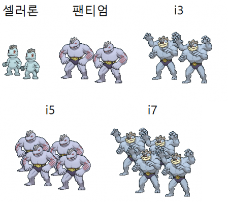
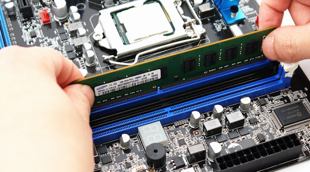
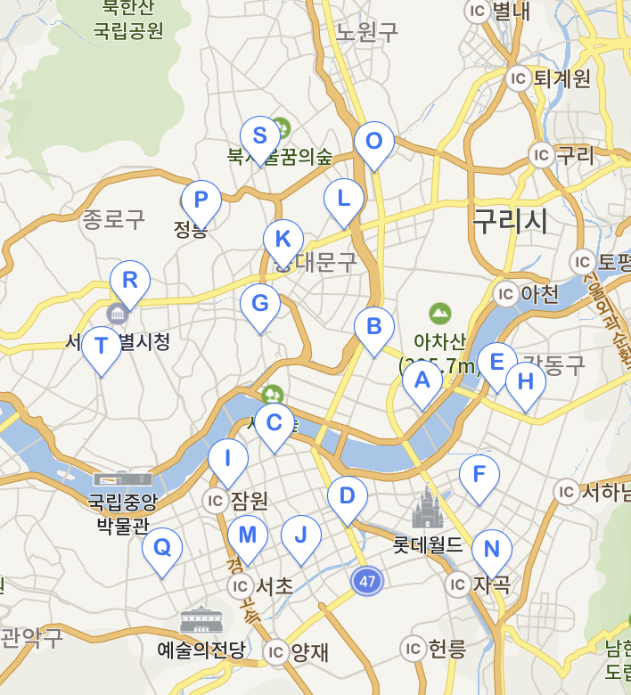

우리는 컴퓨터를 살 때 무엇을 고려하고 사는지를 알고 사야한다. 사용자의 용도에 맞게 부품을 정해야하고 가격을 측정하고 예산에 맞게 사야한다.
보통 조립식 컴퓨터를 산다고 하면 어렵게 생각하는 사람들이 많고 전문적 지식을 가지고 있어야 한다는 생각을 가지게 된다.
이런 생각을 가지고 있는 여자친구와 함께 조립식 컴퓨터를 맞춰보려고 한다.
여자친구는 졸업후 개인 작업과 더불어 게임을 할것이라고 말했고 이에 맞춰서 컴퓨터를 맞추기로했다.
CPU? RAM? GPU? 그게 뭔데?!
컴퓨터를 맞추려고 하면 가장 먼저 마주하는 것이 어려운 부품 이름들이다. 여기서 부터 여자친구는 힘들어하기 시작한다. 하지만 알고보면 쉽게 이해할수있다. 이해를 편하게 하기위해 나는 옷을 컴퓨터와 비교하기로 했다.

CPU?!
컴퓨터의 주머니라고 생각하면 된다. cpu가 좋다는건 주머니가 넓다는 뜻이고, 그만큼 많은것을 넣을 수 있다. 옆 사진은 성능의 이해를 돕기위한 사진이다.

RAM?!
램을 높게 한다는 것은 주머니를 여러개를 가지고 있다는 뜻이다. 주머니가 여러개이니 여러 작업을 동시에 할 수 있다는 뜻이된다.
GPU?!
"컴퓨터 좋아?"라고 물어보면 그래픽카드의 이름을 말하면된다. 게임을 하거나 그래픽작업을 할때 필요한 부품이다. 가격이 비싸면비쌀수록 성능이 높아진다.
대표 브랜드별 PC 가격 비교
전자제품을 대표하는 두기업과 중소기업 한개를 각각 비교하기로 했다.
삼성, LG
- 장점 : 서비스센터가 많다, 믿을 수 있다, 디자인이 이쁘다.
- 단점 : 매우 비싸다.
ASUS 등 중소기업
- 장점 : 가격대비 성능이 매우 좋다.
- 단점 : 서비스센터가 적다. 인식이 좋지 못하다.
-삼성 서비스센터-

-LG 서비스센터-
-ASUS 서비스센터-
50만원으로 게이밍 컴퓨터 맞추기
이제는 예산안에 맞는 부품을 고르고 견적을 내야한다. 여자친구는 50만원이라는 컴퓨터를 사기에는 적은 돈을 제시했고, 첫번째 난관에 부딪혔다.
요즘에는 가성비를 내세운 컴퓨터들이 많기에 부품을 최대한 ‘가성비’에 맞추기로 했다.
기존 인텔의 CPU 보다 amd사의 CPU를 씀으로써 7만원 절약!
삼성의 RAM을 중소기업의 RAM으로 바꿔 4만원x2 8만원 절약!
기존 nvidia의 GPU를 amd의 GPU로 바꿈으로써 3만원 절약!
결국 같은 사양의 조립식 컴퓨터보다 20만원 저렴한 컴퓨터를 맞추게 되었다.
어렵지만 쉬운 조립하기
물론 조립은 내가 직접하지는 않았다. 할 수는 있지만 잘못됐을 경우 돌이킬수 없기 때문에 전문가에게 맡긴후 배송을 받기로 했다.
배송은 깔끔하게 2중 박스처리로 되서 왔다배송까지 걸린시간은 2일 정도였으며, 배송시간과 상태는 매우 만족도가 높았다.
조립의 경우 하나의 선이라도 엉키게 되면 스파크가 생겨 화제의 위험이 생기며, 부품고장의 원인이 되기도 한다. 도전해보려하지말고 가까운 컴퓨터 대리점에 가서 1~2만원 지불후 조립하도록하자!